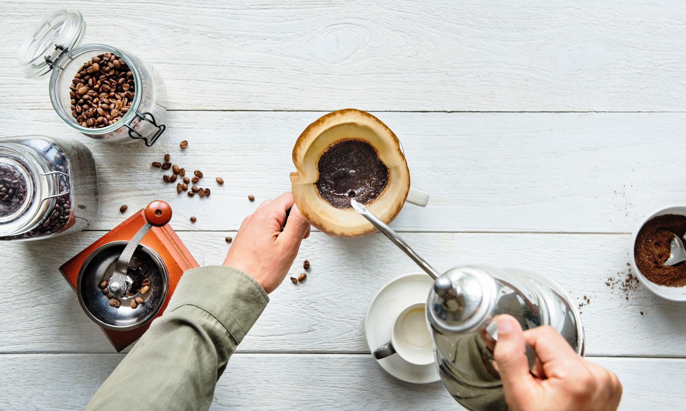

Our mission
The mission and vision of C & F is to be the world leader in Specialty Coffee, and to cultivate an unforgettable experience for our guests through product, service, efficiency, presentation and ambiance. C & F is more than just coffee. Our pastries and packaged foods are curated by our in-house registered dietitian and prepared from scratch daily by our amazing team of bakers. While we have a number of staple items in the food program, we take pride in our ability to innovate, constantly updating our offerings. From new and interesting health conscious items to familiar, comforting foods, we do it all. As proud as we are of the coffee program, our teams' ability to produce incredible baked goods, light bites and healthy options truly sets us apart.
Our coffee
We work with the world's premier importers and exporters of coffee, who give us access to the best and most interesting coffees available. Our team works tirelessly to select coffees for our program and develop roast profiles to bring the absolute best out of each bean. We roast four days a week in our facility in Long Island City ensuring freshness. Our program includes C & F, our everyday blend, Night Vision, our one of a kind espresso blend, as well as a decaf blend that we are extremely proud of. In addition, we always carry three limited edition single origin coffees that we source for their unique, exotic and special flavor profiles.
Our food

C & F is more than just coffee. Our pastries and packaged foods are curated by our in-house registered dietitian and prepared from scratch daily by our amazing team of bakers. While we have a number of staple items in the food program, we take pride in our ability to innovate, constantly updating our offerings. From new and interesting health conscious items to familiar, comforting foods, we do it all. As proud as we are of the coffee program, our teams' ability to produce incredible baked goods, light bites and healthy options truly sets us apart.